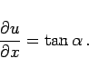
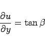

Inhalt Index DeskTop Bronstein

 Differentialrechnung Differentiation von Funktionen von mehreren Veränderlichen Partielle Ableitungen
Differentialrechnung Differentiation von Funktionen von mehreren Veränderlichen Partielle Ableitungen


Stellt man eine Funktion u = f(x,y) als Fläche in einem kartesischen Koordinatensystem dar und legt man durch den Flächenpunkt P eine Ebene parallel zur x,u-Ebene, dann gilt
|  | (6.36a) |
Dabei ist  der Winkel zwischen der positiven x-Achse und der Tangente an die Schnittkurve der Fläche in dem betreffenden Punkt mit einer Ebene, die parallel zur x,u-Ebene verläuft. Die Messung von
der Winkel zwischen der positiven x-Achse und der Tangente an die Schnittkurve der Fläche in dem betreffenden Punkt mit einer Ebene, die parallel zur x,u-Ebene verläuft. Die Messung von  erfolgt, ausgehend von der x-Achse zur Tangente an die Schnittkurve, im entgegengesetzten Drehsinn des Uhrzeigers. Dabei ist der Blick in die Richtung der positiven y-Achse gerichtet. In Analogie zu
erfolgt, ausgehend von der x-Achse zur Tangente an die Schnittkurve, im entgegengesetzten Drehsinn des Uhrzeigers. Dabei ist der Blick in die Richtung der positiven y-Achse gerichtet. In Analogie zu  ist
ist  gemäß
gemäß
|  | (6.36b) |
definiert.
Bezüglich der Ableitung nach einer gegebenen Richtung s. Richtungsableitung bzw. nach einem Volumen s. Volumenableitung.